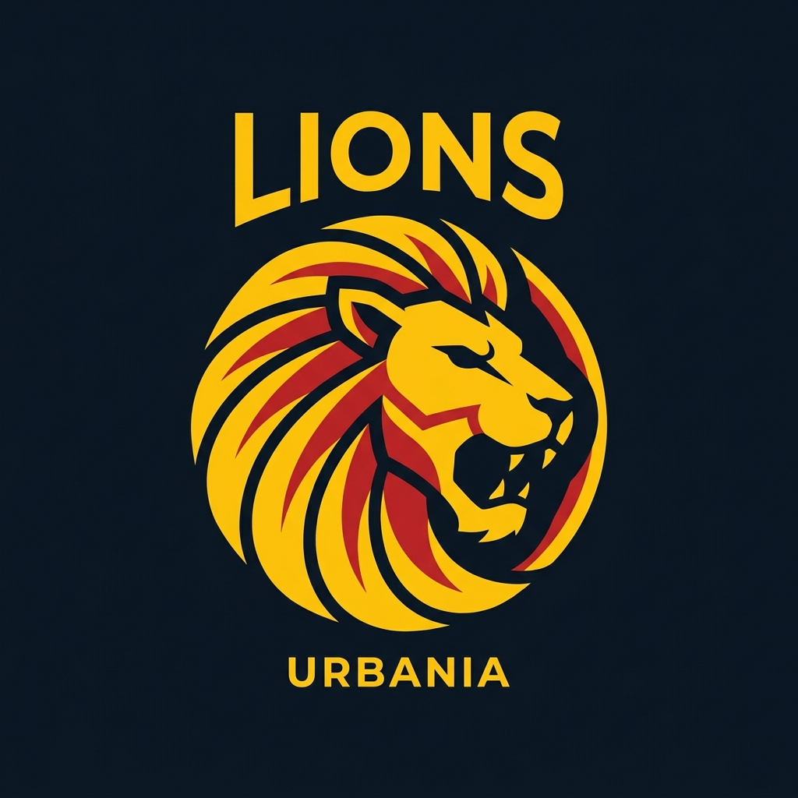
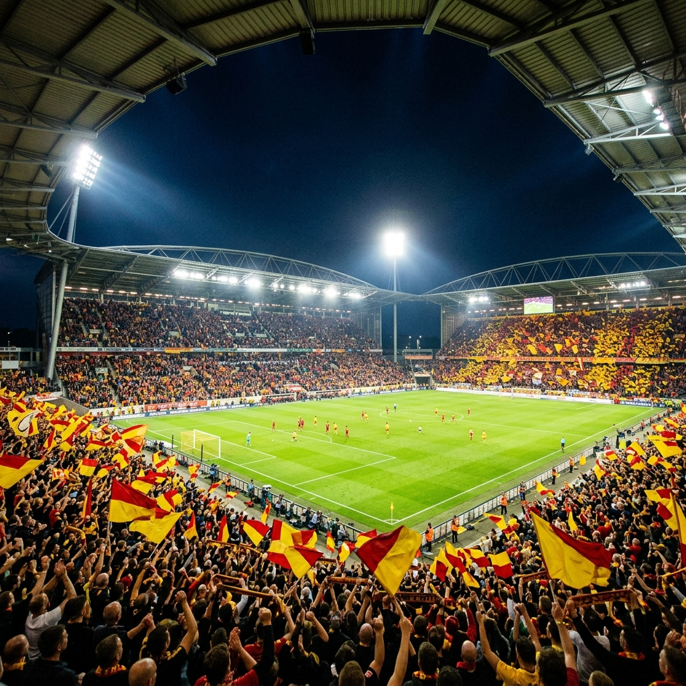
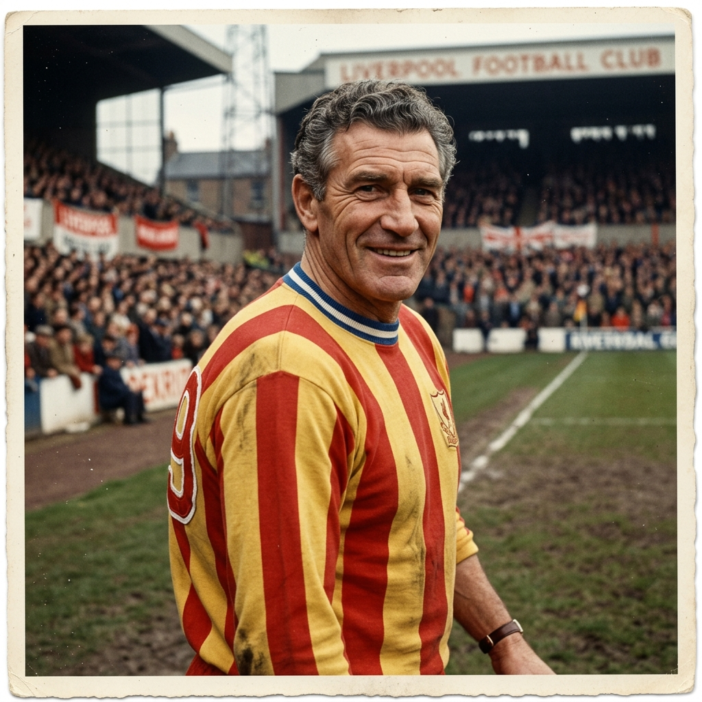
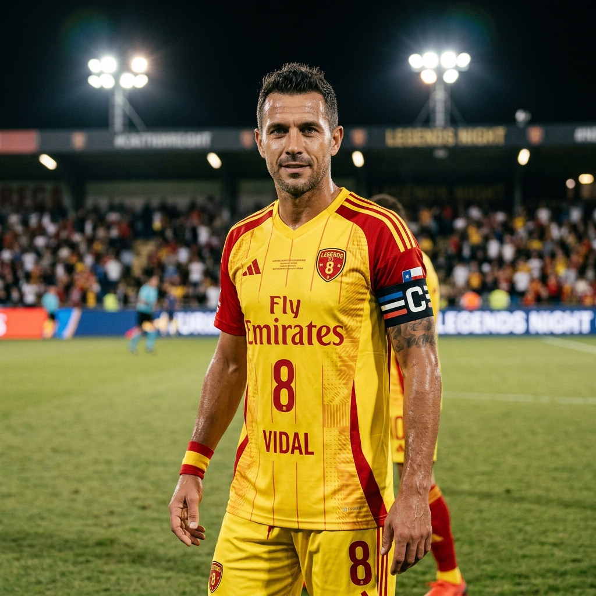
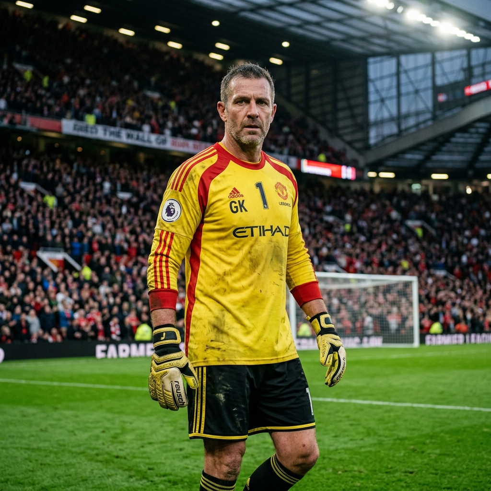
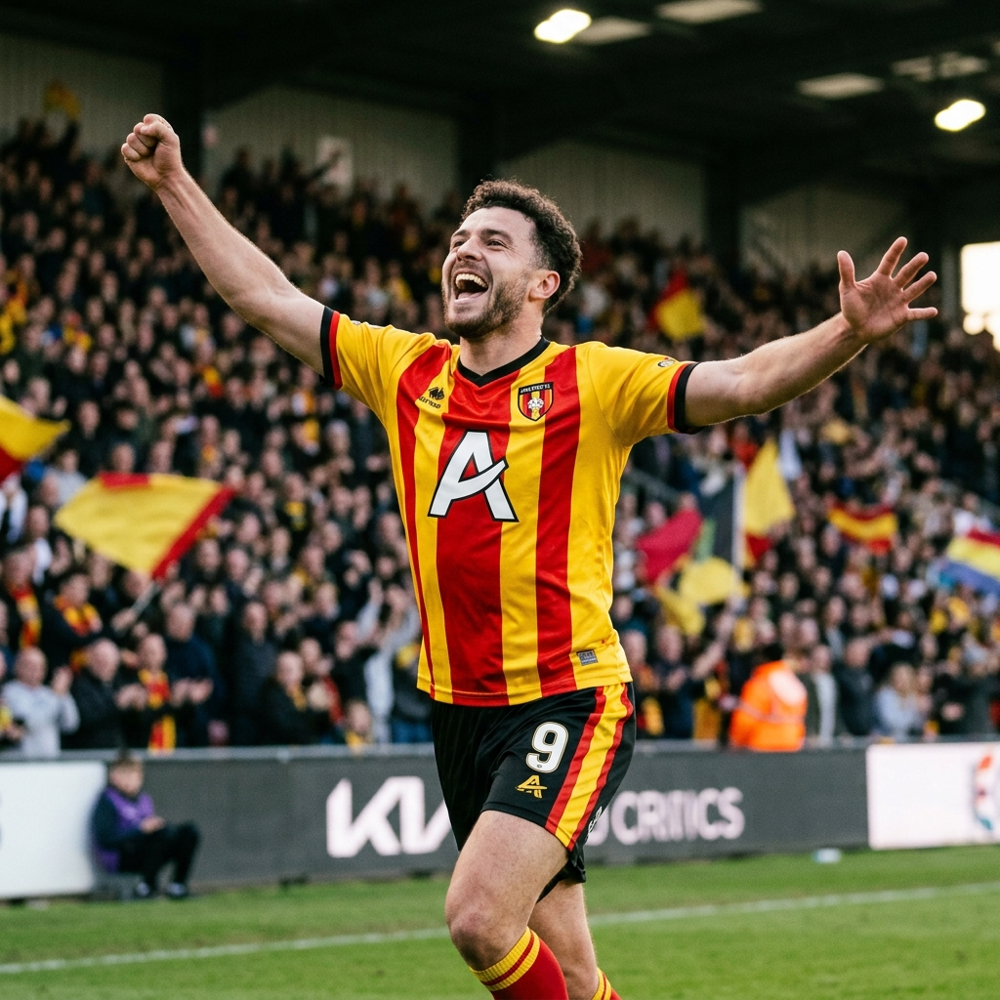

Futbol · İstanbul · Est. 1905
Galatasaray, küçüklüğümden beri desteklediğim, Türk futbolunun en köklü ve başarılı kulüplerinden biridir. Sarı-kırmızı renkler bende sadece bir takım sevgisi değil; aidiyet, tutku ve gurur duygusunu temsil eder.
Galatasaray'ın 2000 yılında kazandığı UEFA Kupası ve Süper Kupa, Türk futbol tarihinin en unutulmaz anlarındandır. Bu başarılar ve Hakan Şükür, Arda Turan gibi efsane isimlerin bulunması takımı benim için çok daha anlamlı kılmaktadır.


Türk futbolunun efsanevi golcüsü

Barcelona'ya transfer olan ilk Türk

Galatasaray'ın efsane kalecisi

Kritik maçların yıldız santrforu